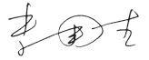

推荐序
“计算机体系结构”（Computer Architecture）也称为“计算机系统结构”，是计算机科学与技术一级学科下最重要的二级学科。“计算机体系结构”是研究怎么造计算机而不是怎么用计算机的学科。我国学者在如何用计算机的某些领域的研究已走到世界前列，例如最近很红火的机器学习领域，中国学者发表的论文数和引用数都已超过美国，位居世界第一。但在如何造计算机的领域，参与研究的科研人员较少，科研水平与国际上还有较大差距。2016年国家自然科学基金会计算机学科的面上项目共有4863项申请，但申报“计算机体系结构”（F0203）方向的项目只有22项，占总申报项目的0.45%，而申报计算机图像与视频处理方向的项目有439项。
做计算机体系结构方向研究的科研人员较少与大学及研究生的课程教育直接相关。计算机体系结构是工程性很强的学科，而我国的大学老师大多没有机会实际参与设计CPU和操作系统，对计算机的软硬件工作过程不能融会贯通，教学时只能照本宣科，学生只学到一些似懂非懂的名词概念，难以培养“造计算机”的兴趣。目前全国许多高校使用从国外翻译的体系结构教材，John L. Hennessy和 David A. Patterson合著的《计算机体系结构：量化研究方法》已经不断改版至第5版，被认为是计算机体系结构的经典教材，但此书有近千页之厚，本科生未必都能接受。国内也出版了不少体系结构（系统结构）方面的教材，但多数兼顾了研究生和参考书的需求。因此，迫切需要一本为本科生量身定制的计算机体系结构精品教材。
摆在读者面前的这本《计算机体系结构基础》就是为满足本科教育而编著的精品教材。过去出版的体系结构教材大多是“眼睛向上”编写的，作者既考虑了做本科教材的需求，又考虑了参考书的需求，为了体现参考书的技术前瞻性，往往会包含一些未经受考验的新技术。而本书是作者在2011年已经出版的硕士生教材《计算机体系结构》的基础上，“眼睛向下”编著的本科生教材，多年的研究生授课经历使作者十分明确本科生应学习哪些体系结构的基础知识。凡写进这本教科书的内容都是本科生应该掌握的知识，不会为追求时髦而增加额外的内容。
与过去出版的计算机体系结构教科书相比，本书有以下几个特点：
第一个特点是特别重视知识的基础性。计算机发明至今已经70余年，曾经用来造计算机的技术多如牛毛，计算机期刊与会议上发表的文章数以万计，但是许多技术如过往烟云，已经被丢进历史的垃圾堆。我在美国读博士时，一位很有权威的教授讲了一个学期计算机体系结构课，基本上都是讲并行计算机的互连（Interconnection）结构，如蝶形（Butterfly）互连、超立方体（Hypercube）互连、胖树（Fat Tree）互连等，现在这些内容已不是计算机界普遍关心的问题。20世纪90年代，计算机体系结构国际会议（ISCA）几乎成了专门讨论缓存（Cache）技术的会议，但没有几篇文章提出真正可用的缓存技术，以至于计算机界的权威John L. Hennessy教授1997年说出这样的话：“把1990年以来计算机系统结构方面所有的论文都烧掉，对计算机系统结构没有任何损失。”本书作者在“自序”中写道：“计算机体系结构千变万化，但几十年发展沉淀下来的原理性的东西不多，希望从体系结构快速发展的很多现象中找出一些内在的、本质的东西。”毛泽东在《实践论》中归纳总结了十六个字：“去粗取精，去伪存真，由此及彼，由表及里。”本书作者遵循这十六个字的精神，对几十年的计算机体系结构技术做了认真的鉴别、选择和对比、分析，写进教科书的内容是经得起历史考验的基础知识。
第二个特点是强调“一以贯之”的系统性。“计算机系统结构”的关键词是“系统”而不是“结构”，国外做计算机系统结构研究的学者介绍自己时往往是说：“我是做系统（System）研究的。”计算机专业的学生应具有系统层面的理解能力，能站在系统的高度解决应用问题。对计算机系统是否有全面深入的了解是区别计算机专业人才和非专业人才的重要标志。长期以来我们采用“解剖学”的思路进行计算机教学，按照硬件、软件、应用等分类横切成几门相对独立的课程，使得计算机系毕业的学生对整个计算机系统缺乏完整的理解。如果问已经学完全部计算机课程的学生，在键盘上敲一个空格键到屏幕上的PPT翻一页，在这一瞬间计算机中哪些硬件和软件在运转，如何运转，可能绝大多数学生都讲不清楚。本书有若干章节专门讲述计算机的软硬件协同、计算机系统的启动过程等，着力培养学生的全局思维能力。为了使学生一开始就对计算机有全局的框架性认识，此教材的第1章对全书内容做了尽可能通俗易懂的描述，这是追求系统性教学的刻意安排。本书作者强调：“一个计算机体系结构设计人员就像一个带兵打仗的将领，要学会排兵布阵。要上知天文、下知地理，否则就不会排兵布阵，或者只会纸上谈兵地排兵布阵，只能贻误军国大事。”这里讲的“天文”是指应用程序、编译程序和操作系统，“地理”是指逻辑、电路和工艺。只有上下贯通，才能真正掌握计算机体系结构。
第三个特点是强调能在硅上实现的实践性。由于CMOS电路集成度的指数性提高，一块CPU芯片已可以集成几十亿晶体管。计算机体系结构的许多知识现在都体现在CPU中，因此从某种意义上讲，不懂CPU设计就不能真正明白计算机体系结构的奥妙。CPU的结构通常称为微体系结构，主要在硕士课程中讲授，但本科生的体系结构课程也应学习在硅上能实现的技术。陆游诗云：“纸上得来终觉浅，绝知此事要躬行。”只会P2P的学习（从Paper到Paper的学习）往往学不到真本事，只有最后能“躬行”到硅上的知识才是过硬的知识。本书作者有十几年从事CPU设计的经验，能正确区分哪些是纸上谈兵的知识，哪些是能落实到硅上的知识，这是他们独特的优势。在中国科学院大学的本科教学中，计算机体系结构课程还辅以高强度的实验课，实践证明这对学生真正理解课堂学到的知识大有好处。
本书内容选材还需要经过课堂教学的长期检验，需要不断听取学生的反馈意见和同行的批评建议，希望经过几年的完善修改，本书能真正成为受到众多大学普遍欢迎的精品教材。
